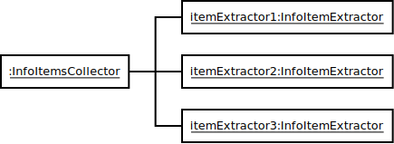

Concept of the Extractor
Collector/Extractor pattern
Before we can start coding our own service we need to understand the basic concept of the extractor. There is a pattern you will find all over the code. It is called the extractor/collector pattern. The idea behind it is that the extractor would produce single pieces of data, and the collector would collect it to form usable data for the front end. The collector also controls the parsing process, and takes care of error handling. So if the extractor fails at any point, the collector will decide whether or not it should continue parsing. This requires the extractor to be made out of many small methods. One method for every data field the collector wants to have. The collectors are provided by NewPipe. You need to take care of the extractors.
Usage in the front end
So typical call for retrieving data from a website would look like this:
Info info;
try {
// Create a new Extractor with a given context provided as parameter.
Extractor extractor = new Extractor(some_meta_info);
// Retrieves the data form extractor and builds info package.
info = Info.getInfo(extractor);
} catch(Exception e) {
// handle errors when collector decided to break up extraction
}
Typical implementation of a single data extractor
The typical implementation of a single data extractor on the other hand would look like this:
class MyExtractor extends FutureExtractor {
public MyExtractor(RequiredInfo requiredInfo, ForExtraction forExtraction) {
super(requiredInfo, forExtraction);
...
}
@Override
public void fetch() {
// Actually fetch the page data here
}
@Override
public String someDataFiled()
throws ExtractionException { //The exception needs to be thrown if someting failed
// get piece of information and return it
}
... // More datafields
}
Collector/Extractor pattern for lists
Sometimes information can be represented as a list. In NewPipe a list is represented by a InfoItemsCollector. A InfoItemCollector will collect and assemble a list of InfoItem. For each item that should be extracted a new Extractor must be created, and given to the InfoItemCollector via commit().

If you are implementing a list for your service you need to extend InfoItem containing the extracted information, and implement an InfoItemExtractor that will return the data of one InfoItem.
A common Implementation would look like this:
private MyInfoItemCollector collectInfoItemsFromElement(Element e) {
MyInfoItemCollector collector = new MyInfoItemCollector(getServiceId());
for(final Element li : element.children()) {
collector.commit(new InfoItemExtractor() {
@Override
public String getName() throws ParsingException {
...
}
@Override
public String getUrl() throws ParsingException {
...
}
...
}
return collector;
}
InfoItems encapsulated in pages
When a streaming site shows a list of items it usually offers some additional information about that list, like it's title, a thumbnail, or its creator. Such info can be called list header.
When a website shows a long list of items it usually does not load the whole list, but only a part of it. In order to get more items you may have to click on a next page button, or scroll down.
This is why a list in NewPipe lists are chopped down into smaller lists called InfoItemsPages. Each page has its own URL, and needs to be extracted separately.
Additional metainformation about the list such as its title a thumbnail or its creator, and extracting multiple pages can be handled by a ListExtractor, and it's ListExtractor.InfoItemsPage.
For extracting list header information it behaves like a regular extractor. For handling InfoItemsPages it adds methods
such as:
- getInitialPage() which will return the first page of InfoItems.
- getNextPageUrl() If a second Page of InfoItems is available this will return the URL pointing to them.
- getPage()
returns a ListExtractor.InfoItemsPage by its URL which was retrieved by the
getNextPageUrl()method of the previous page.
The reason why the first page is handled special is because many Websites such as YouTube will load the first page of items like a regular webpage, but all the others as an AJAX request.